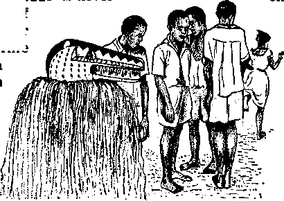

wing the Doctor
PAGE a
wpy Conversation at Mealtime
PAGE 12
nial of “Due Process” Denounced in Supreme Court
PAGE ien
JUNE 22, \96O
THE MISSION OF THIS JOURNAL
News sources thqt ore able to keep you awake to the vital Issue* of our times must be unfettered by censorship and selfish interests. “Awake!11 has no fetters. It recognizes facts, faces facts, Is free to publish facts, ft Is not bound by political ambitions or obligations; it is unhampered by advertisers whose toes must not be Trodden on; if is unprejudiced by traditional creeds. This journal keeps itself free that it may speak freely to you. But it does not abuse its freedom. It maintains integrity to truth.
“Awake!” uses the regular news channels, but is not dependent on them. Its own correspondents are on all continents, in scores of nations. From the four corners of the earth their uncensored, on-the-scenes reports came to you through these columns. This journal's viewpoint is not narrow, but Is internotionaL it is read in many nations, in many languages, by persons of all ages. Through its pogos many fields of knowledge pass in review—government, commerce, religion, history, geography, science, social conditions, natural wonders—why, its coverage is as broad as the earth ond as high as the heavens.
“Awoke!'1 pledges itself to righteous principles, to exposing hidden foes and subtle dangers, to championing freedom for all, io comforting mourners and strengthening those disheartened by the failures of a delinquent world, reflecting sure hope for the establishment of a righteous New World.
Get acquainted with “AwakeI” Keep awake by reading "Awakef"
Published Simulianeoubly in the United States by the WATCHTOWER BIBLE AND TRACT SOCIETY OF NEW YORK. INC. 117 Adams Street Brooklyn 1, New York, U.S.A,
AND IN Eno LAND BY WATCH TOWER BIBLE AND TRACT SOCIETY
Watch Tower House. The Ridgeway London N,W. 7, Engi anti
N. H. Knorr, President Ge ant SuiTre, Secretary
Printing this issue? 3,475,900
"Awake!*1 1* flikllili«d In ths fodawina 21
Semimonthly-”Afrikaacu, Danish. Dutch, English, Finn* lab, French, Oerman, Greek, Italian, Japtfiew, Norwe* E^an, Portugrtfw, Spanish Swedish. Tigalfig, Zulu. Monthly—ClnjBUja, Indonesian, Korean, poltah, UkralD-Ian.
Yearly flubscriptlOTi rates
Officer tor semimonthly editions
AfiNftaa, U,S.f 117 Adama Rt., Brooklyn 1. N.Y. *1
Australia, 11 Beresford Rd., Stmhfteld, N.S.ff.
15& BrAigflanci Ar?.. Tordokj 19, tat
Eit|l*ndi Watch Tower House,
jtftr 621 New North Rd., Auckland, 8.W. 1 7/-
Ssath Afrita, Private Raj, Rlamltfontalci, Tri. 7/-
Monihly editions cost half the above riiefi-
4d a copy (Australia, 5d) tirnfftsncoi far aufcerfotlQna should be sent to the In your country. Otherwise wnd your remittance to London, Notice d expiration la sent at hast two feme# before subscrtMloti expire?.
CHANGES QF ADDRESS ahoild nMk n thirty dtyi before yoir moving Ante. Give u your oil and new alirass (If poulbla, yotf aid sddrai hMD- Watt* Tower, Watc> Tower Haute, Tlba London N.W. 7, England.
firterwJ as aoceod-dasa DiatUf at Brooklyn, N.Y. Printed In England
Thu filfeh trihelatlui usd In "Awake!11 ]» the New World TraMlrilim of the Holy Script™, When other Translations ere lied the folknrinp »ymhoU will appear feehind Ue ritstlom;
AS - American Standard Ventan XT— Aa Ameffcsa Transitttatr AV- Authorised Version (1811) Da — J. N. Darby's veratau
Z>y - Catholic Itauay ventfott 2?Z?- Ihe EncphaUr D/egiutt JP - Jewish Publication Boc. L/& — Isaac Ueser’s verslot]
.iWtJ— Jjudm Moffatt's version
- Z B. EcrtfrfThain'a vemtau RS - Revised Standard Version Yg — Robert Young’s ventan
CONTENTS
What Prospects for World Unity?
Happy Conversation at Mealtime
Denial of "Due Process" Denounced
in the United States Supreme Court 16
Living Wonders of the Desert Life in an African Bush School "Your Word Is Truth”
Did a Virgin Conceive?
Watching the World
20
24
27
29

rpREASURE hunting ig not confined to 1 the realm of storybooks or to the dreams of children. It is something of intense interest to thousands of adults who often spend large sums of money in the search for buried riches. Despite the help they may receive from electronic treasurehunting equipment, their search is usually fruitless.
There is a treasure hunt, however, that is far more rewarding than a search for the buried doubloons and jewels of a long-dead pirate. It is the search for wisdom and understanding. Unlike material riches, they do not pass away with use and cannot be stolen. Neither do they bring unhappiness and mental anguish to a person as material wealth so often does. This desirable treasure is the wisdom of God and the understanding of his Word and purposes. Eternal life is one of its choicest valuables. That in itself is worth more than hidden chests of gold, silver and jewels.
God’s Word encourages all people to be searchers for this invaluable treasure of wisdom. “If you keep seeking for it as for silver, and as for hid treasures you keep searching for it, in that case you will understand the fear of Jehovah, and you will find the very knowledge of God.” It also says: “Happy is the man that has found wisdom, and the man that gets discernment, for the gaining of it is better than the gaining of silver and the produce of it even than gold. It is a tree of life to those taking hold of it, and those keeping fast hold of it are to be called happy.” —Prov. 2:4, 5; 3:13,14,18.
Great effort is required to tramp through wild terrain or to dive into deep, treacherous water in search of buried treasure. But those who think they know where a treasure can be found are willing to make that effort. They are willing to endure great hardships and to surmount seemingly impossible obstacles to find it. Is not the search for God’s wisdom worthy of a similar effort? Should it not be sought with the same intensity?
If a person that has found a buried treasure told you where you could find a similar treasure, would you refuse to listen? Would you walk repeatedly over the designated spot without stopping to dig vigorously for it? It is unlikely that you would. Yet you may be doing just that with respect to the treasure in God's Word. You may be one of those persons who has been told repeatedly that the Bible contains the wisdom of God that leads to eternal life but who refuses to put forth the effort required to dig for it by diligent study. If you look upon Bible study as too much effort, you are passing by an invaluable treasure that could be yours.
The person that begins digging for a treasure but gives up after merely scratching the surface will never succeed in enriching himself with buried gold. The same is true with the person that begins studying God’s Word but quits after awhile because he thinks it is too exhausting or because his acquaintances discourage him from continuing. He is foolishly forsaking the only means for enriching himself with true wisdom and its many valuables. Wisdom is a treasure that is for persons who know its value and who are willing to exert themselves to get it, refusing to be discouraged.
77ie successful hunter for the treasure of wisdom is willing to put forth the effort that Bible study requires, and he is receptive to what he finds. He is willing to let the Bible transform his thinking and his way of life. Because he is willing to be taught by God’s Word, his search for the treasure of wisdom is most rewarding. He benefits from the wisdom that has come from God. “All the sayings of my mouth are in righteousness. Among them there is nothing twisted or crooked. All of them are straight to the discerning one, and upright to the ones finding knowledge. Take my discipline and not silver, and knowledge rather than choice gold. For wisdom is better than corals, and all other delights themselves cannot be made equal to it.” —Prov. 8:8-11
God’s Word has sparkling gems of knowledge that are a delight to the heart of those who love righteousness. They sweep away oppressive ignorance that binds people to superstitions, fears and traditions. They remove the uncertainty about life that comes from not knowing why we exist, why death comes upon us and what will become of us. They can open your eyes to a thrilling view of the future that inspires hope and can make you rejoice to be living at this time.
The wise words of counsel that are found in the Bible are like glittering, golden nuggets of great value that can be had by doing some digging. They strengthen, build up and comfort. They can help you act wisely in your relations with other people, help you have harmony in your marriage and help you avoid dangerous pitfalls in life, '
As a pleasant light in a dark place brings comfort and shows the way to go, so the wisdom in God’s Word is a comforting light that can illuminate your way in this confusing and spiritually dark world. It can show you how to walk in a way that brings the approval of God and his promised gift of eternal life. “Your word is a lamp to my foot, and a light to my roadway.”—Ps. 119:105.
The search for this valuable treasure does not need to be discouraging and fruitless, as is generally the case with a search for buried gold and jewels. The assistance given by the publications of the Watch Tower Society can make it a most rewarding hunt. The success you have will depend upon how keenly you want this treasure. If you recognize its true value you will cherish it above all other treasures. “The getting of wisdom is O how much better than gold! and the getting of understanding is to be chosen more than silver.” —Prov. 16:16.
UNITY?
Through what medium will a united world come?
lives, your citfes, your everything, this whole disunited world could very easily end up in one atomic ish heap. Does that make sense? Therefore, for humanity’s sake, for the sake of everyone and everything, the cry is for a united world now, or it may be never.
What prospects for world unity are there? Prospects for political unity between East and West are admittedly extremely slight. The West, perhaps, will never forget the recent words of Premier Khrushchev, that Communism is out to bury Capitalism. Elder statesman Bernard Baruch declared:
«T TNITE now or we perish!” cry the U religio-political prophets of the Western world. “United we stand, divided we fall,” say they. Their appeal is for unity to safeguard their freedoms against the relentless drive of materialistic communism.
Everywhere there is growing fear that unless nations unite, their differences may someday erupt into a nuclear war that would completely empty the earth of its riches and its people. Deputy Premier Anastas I. Mikoyan of the Soviet Union declared: “In one minute” the fruit Of the world’s labors might be destroyed by a nuclear explosion. “We are building and building, and yet one explosion would be enough to annihilate everything.” In the face of such total annihilation, disunity just does not make sense.
Unity now is most urgent, because the danger of nuclear war by miscalculation is fast becoming a frightening reality. United States Secretary of State Christian A. Her-ter said: “The more nations that have the power to trigger off a nuclear war, the greater the chance that some nation might use this power in haste or blind folly.” This means that because of a single foolish mistake your homes, your families, your “The world is shaping up to a struggle between Communism and individualism, between that system which feels the state should be the master and that system which feels the state should be the servant of the individual.” How to prevent this ideological struggle from erupting into a total war is the question of the hour.
Everyone seems to believe that “war is suicidal folly,” as Prime Minister Macmillan of Britain declared. President Eisenhower stated: “The people of all the world desire peace. This is true for people everywhere." And as Premier Khrushchev said: “What we want is peace, peace, peace.” Yet the major powers of the world are engaged in an accelerated arms race, which is driving them farther apart ideologically and bringing them closer to a final clash militarily. Nations are unyielding, unbending. None wishes to give up its way of life for the sake of the other, or for the sake of peace and unity. Fear and distrust are as much in evidence at the disarmament conferences as between the nations themselves. In the light of present developments the prospects for world unity are dim indeed.
More coals of fire are heaped on the already critical situation in the world by the present practice of “market grabbing,” or, as it is often called, “economic aggression.” The danger of economic aggression was well highlighted by former United States President Woodrow Wilson, who asserted that World War I was caused by it. “This war, in its inception,” said Wilson, “was a commercial and industrial war.”
Once again divisive economic rivalry is at work, only it is on a much grander scale now than ever before. In recent years the Soviet Union, in an effort to gain economic mastery in the world, has reached out into Asia, Africa, the Middle East, South America and Cuba, seeking control of earth’s oil and other raw materials. The West is disturbed, because such aggression is often accompanied by sabotage, subversion, internal revolution and a communistic regime. Such aggression, if carried too far, could easily erupt into World War IH, and all mankind would suffer because of the greed of a few. Therefore, a unified economic policy between nations is most urgent now. But what prospect is there for such an agreement between the nations?
Christendom’s Cry for Unity
From still another segment of the world comes the cry for unity, namely, from Christendom’s religions. Atheistic communism is hostile toward all religions. In 1956 Premier Khrushchev declared: “We remain atheists. , . . We are doing everything we can to eliminate the bewitching power of religion.” Communists maintain that “religion is the opium of the people.” Lenin in his letter to Gorky wrote: “Every religious idea, every idea of god, even every flirting with the idea of god, is unutterable vileness.”
To combat these destructive communistic ideas Christendom knows that she must unite now or perish. The Tulsa, Oklahoma, Tribune stated: “Churches have become ineffectual because of their lack of unity, indeed because of their quarreling competitive disunity,” Conscious of her disunity, the very words of Jesus Christ come to Christendom as a disturbing reminder: “Every kingdom divided against itself comes to desolation, and every city or house divided against itself will not stand.” (Matt. 12:25) The Roman historian Sallust warned: “By discord the greatest are destroyed." Knowing that her many religious divisions could mean her downfall, Christendom now cries for unity at all costs.
But what prospects are there for religious unity within Christendom? What chance is there of there ever being religious unity throughout this world? Actually, prospects for religious unity on a world-wide scale are remote indeed. In fact, the idea has been termed “inconceivable.” The great gap between Catholicism, Protestantism, Judaism and heathenism is one never to be closed by man. To Roman Catholics religious unity can mean only one thing—the uniting of all other religions with the Roman Catholic Church, Protestantism is not about to compromise itself to that extent. In many respects Protestant religions appear less fearful of communism than they do of an alliance with Rome. As for reunification, Episcopal Bishop Henry Knox Sherrill said only a “miracle" of God can overrule the prejudices and misunderstandings that have grown up over the past 1,500 years. World religious unity means no religious divisions among all of earth’s inhabitants, all of them being “fitly united in the same mind and in the same line of thought.” (1 Cor. 1:10) There is not the slightest basis for believing that man will bring this about.
A United World Sure
One of the main reasons for world disunity is that nations prefer to put faith in their own pet theories, rather than believe what God the Creator says is the true cs&m for the disunity of the world. Dr. Frank N. D. Buchman, initiator of Moral Re-Armament movement, said: “People have been teaching the great truths in the wrong way. They lack the dominant passion to hear the plan that God has for their nations and the conviction to follow it. . .. With all the sincerity of my eighty years and impelled by the urgency of the critical world situation, I say God is the answer to the modern confusion that dogs us. Go all the way with God and you will have the answer.”
The living God Jehovah identifies Satan the Devil as the one responsible for world disunity. Since Satan is invisible to men and far mightier than they are even with all their nuclear power, men and nations have not and never can dislodge him from his post as “god of this system of things.” (2 Cor. 4:4) This one fact alone proves that a united world can never be brought about by human efforts, whether this be through peace pacts, leagues of nations, federations, or even the United Nations. Only by removing Satan from his position over this world can a united world come. Until that is accomplished this world will go on experiencing disunity, confusion and war.
Do not despair; we have God to thank for the promise of a united world. Not only has he promised to bring it to pass through his kingdom by Jesus Christ, but he has already taken steps to bring unity to earth as it exists in heaven. A.D. 1914 Jehovah established his heavenly kingdom government. Its first move was to cast Satan and his hosts from the heavens down to the vicinity of the earth. This act by the King Jesus Christ demonstrated his kingly power over Satan. Now before he moves to eradicate all divisive factors from the earth in the battle of Armageddon, the King is having an announcement made of his kingdom in all the earth for a witness to all nations by means of his representatives. After this proclamation, Jesus said, “the accomplished end will come.” (Matt. 24:14; Rev. 12:12; 16:16) This means the end of Satan’s disunited world system in Jehovah’s righteous war of Armageddon. After Armageddon, with Satan and his wicked world system gone, a united world will blossom forth. Gone forever will be all racial, religious, political and national divisions of the earth. Peace and unity will be here to stay for all time.
Why will God’s kingdom government succeed where other governments have failed? Because God’s government is a supergovernment made up of tried and tested immortal creatures with Christ as its head. It has all power in heaven and in earth behind it, therefore, power enough to destroy Satan and his demonic organization that has kept the world divided all these years. (Dan. 2:44; Matt. 28:18; Heb. 2:14) God’s government will situate tried and tested righteous men in positions of earthly authority. These men, because of their dedication and exclusive devotion to God, will see to it that God’s will is done on earth. Under Jehovah’s kingdom pure worship will fill the earth, even as it did the paradise garden of Eden.—Isa. 11:9.
Knowing now that no materialistic solution, no political formula, no economic policy, no worldly institution can save this divided world from destruction at Armageddon, because it is of the Devil, what, then, is the only reasonable course for us to follow? The only sensible thing for us to do is to align ourselves with the winning Kingdom government by God that will survive this world’s end and bring in lasting peace and unity to the earth for all obedient mankind. By taking our stand for God’s kingdom it may be that we shall be privileged to live forever under its rule after Armageddon in a united world without end.
TT'OR a patient to sue his doctor after the I? doctor has spent much time and effort trying to help him seems like the height of ingratitude; yet lawsuits against doctors and hospitals are filed at a rate of 6,000 to 9,000 a year. They amount to about 45 to 50 million dollars yearly. That is a tremendous financial burden to place upon men and institutions that are popularly regarded as being dedicated to the welfare of mankind. Why is it being done? Why are there so many disgruntled patients? Are all of them ingrates trying to avoid paying their medical bills?
The American Medical Association has estimated that one doctor out of every seven in the United States has been involved in a lawsuit. In 1955 a report stated that malpractice suits at that time had increased about 250 to 350 percent over the preceding ten-year period. Since then they appear to have continued rising in number.
The situation is such now that a doctor feels compelled to carry a large amount of insurance, even if he has never had a lawsuit filed against him. He never knows when it may happen. Unless he is substantially covered with insurance, an adverse judgment can wipe him out financially. Some specialists carry policies amounting to as much as $300,000 to $500,000. As might be expected, the increase in malpractice lawsuits has been accompanied by increases in the cost of insurance. This is passed on to patients in the form of higher medical bills.
While some of the lawsuits are unjustified, being instituted by people who expected too much from their doctors, others are for obviously good reasons. In these cases the doctors involved were careless or indifferent to the welfare of their patients, causing them unnecessary suffering. A doctor is guilty of malpractice when a patient sustains an injury because the doctor failed to apply average skill or take
average precautions that can be expend from a reputable physician. ‘ ~
Grounds for Complaint
There are many cases in which patients have legitimate grounds for being angry with their doctors. Consider, for example, the patient in a California hospital who was wheeled into the operating room to have a limb amputated. After the operation he discovered to his great dismay that the surgeon had cut off the wrong limb. A somewhat similar experience was had by a patient in an Illinois hospital. Imagine, the shock of that person upon discovering that a limb had been amputated unnecessarily because of mistaken identity. These patients could feel justified in going to court to obtain financial compensation for their loss.
Mistaken identity, as in the latter case, is a common cause for malpractice suits. An interesting one was related by Milton Silverman in The Saturday Evening Post. He said: “Two children were brought to the operating floor at the same time, Fred for a tonsillectomy and Billy for a circum-u"«ion. somenow me cnuaren got mixea up ftrts the wrong operations were performed. Later one of the surgeons declared he had done everything possible to avoid such a mistake. ‘I went up to the boy and doublechecked,* he explained. ‘I asked him his name. I asked, “Are you Fred?” And he said “I sure am.” ’ ” Billy was afraid, but he was not Fred. This mix-up was not too serious, although it did result in a cash settlement.
What happens when a blood transfusion is involved in a case of mistaken identity? Very often the result is death. After a Chicago woman died because she was given the wrong type of blood The Post-Standard of Syracuse, New York, said: “The recent death of a Chicago woman due to transfusion of the wrong type of blood, is repeated about 3,000 times a year in the United States, a blood authority says. Dr. Alexander S. Wiener of Brooklyn said this is the estimate being made at the International Society of Hematology Convention in Boston, where he was reached by the Chicago Daily News Service.”
Giving a patient the wrong type of blood, causing his death, is obviously a gross blunder. In a lawsuit it can bring a staggering judgment against the medical personnel involved in the case. As an example, consider the lawsuit that was brought against two doctors and a New York hospital because a mother was killed by the wrong type of blood. The jury awarded the husband $150,000. Although Justice Robert Doscher reduced this to $135,000, the medical error was still a costly mistake. This case should be a warning to those doctors jvho seem to forget the great medical and legal hazards involved in the use of blood.
A large number of lawsuits have been filed by patients who found that their doctor had left some of his operating equipment inside them. Take, for example, the case of a woman whose incision opened up three days after her operation. An investigation revealed that a large sponge had been left inside her by the surgeon. She filed a malpractice suit and won.
In Pontiac, Michigan, a surgeon operated on a woman for a tumor. Although an assistant warned him that a sponge seemed to be missing, he closed up the incision. Sometime later the woman returned to the hospital with an internal abscess and died. An autopsy revealed that the lost sponge was the cause of her death. This surgeon was charged with gross negligence in a number of other cases and was dismissed from the hospital.
In Pasadena, California, a woman won a malpractice suit against her doctor because he carelessly left a nine-inch drainage tube inside her. In another case a nurse noticed that a boy of eight, who had his tonsils removed, had stopped breathing. He could not be revived. It was found that his death was caused by a gauze sponge that had been left in his throat. In still another case a woman underwent an operation during which the doctor accidentally sliced through the canal that carries off urine from the bladder. Years later and after much suffering another doctor discovered what had happened. The first doctor not only refused to apologize but accepted no responsibility for the blunder. Such incidents send indignant patients to their lawyers.
It should not be concluded from these cases of malpractice that a person is certain to receive careless treatment if he enters a hospital. Generally, doctors and hospitals are conscientious and do their best to avoid mistakes. A few negligent doctors and some careless hospital personnel can damage the reputation of the whole medical profession.
Expert Testimony
Some patients have found difficulty in getting expert medical men to testify in their behalf when they want to start legal proceedings against a doctor. Physicians seem to be reluctant to testify against a colleague. Lawyers have called this reluctance a “conspiracy of silence.” Here is what The Saturday Evening Post said about it: “[Lawyers] say it marks a widespread, dangerous and deliberate attempt of doctors to cover up one another’s mistakes, either by refusing to appear in court against a negligent colleague or by actual lying on the witness stand. Physicians have vehemently and indignantly denied these claims.” While a conspiracy may not exist, physicians have not been co-operative. The Post goes on to state: “According to one nationwide survey, only about 15 percent of all doctors would be willing to tell a patient he had been injured by the negligent treatment of another doctor. Only about 7 percent would agree to appear voluntarily as a witness for such a patient in court."
Law courts have made it a practice to waive the requirement for expert testimony when negligence on the part of a doctor is obvious. They have followed the principle called res ipsa loquitur, which means “the thing speaks for itself." Before courts began to apply this principle in malpractice suits where medical negligence was obvious, a patient frequently lost a lawsuit because testimony from a medical expert could not be obtained. In developing this point about the reluctance of doctors to testify, the Post quoted three judges as giving the following view: “Gradually the courts awoke to the so-called ‘conspiracy of silence.’ No matter how lacking in skill or how negligent the medical man might be, it was almost impossible to get other medical men to testify adversely to him. , , . Not only would the guilty person thereby escape from civil liability for the wrong he had done, but his professional colleagues would take no steps to insure that the same results would not again occur at his hands. This fact, plus the fact that usually the patient is by reason of anesthesia or lack of medical knowledge in no position to know what occurred that resulted in harm to him, forced the courts to attempt to equalize the situation.”
Many Risks
A great number of malpractice suits are unjustified because the patients involved expected too much from their doctors. They seemed to think that doctors are miracle men and that results they hoped for were certain. They failed to realize that the human body is so delicate and so often unpredictable that a doctor cannot guarantee that a certain treatment that has benefited others will benefit them. There are many factors, including those that are psychological, that could interfere with the expected results.
Another thing a patient should realize is that risk is involved with almost any form of medical treatment. Unforeseen complications can cause an ordinarily safe and simple operation to be dangerous. The same is true in the use of drugs. Some that are harmless for most people may be poisonous for a few patients. Penicillin is a well-known example of this. It has a very bad effect upon nersons who are allergic to it. So why sue the doctor when the expected results are not realized? It is not his fault.
The fear of lawsuits is causing an increasingly great number of doctors to insist upon more than the customary number of diagnostic tests before prescribing a treatment. As a precautionary measure he may order an X-ray when it is not absolutely necessary. He may also insist upon consultation with other doctors and perhaps extra hospitalization and nursing care. He may do these things, not so much as a protection to the patient, but as a protection to himself in the event of a lawsuit. Although these extra precautions cause the patient's medical bill to be much higher than it would have been if the doctor did not fear a lawsuit, they are not necessarily undesirable. They reduce the chances of error in diagnosing and in treating the patient, which is of primary importance to him.
Bow to Reduce Lawsuits
Frequently a doctor can avoid a possible lawsuit by being frank with a patient when something goes wrong or when a patient thinks something is amiss. Frankness creates a feeling of trust. When a doctor refuses to admit to a patient that he was wrong or refuses to apologize for an obvious mistake, he is inviting a lawsuit.
Many patients previously involved in lawsuits have said that they would have acted differently if the doctor had admitted his mistake and had explained what had happened. They would not have sued him. Sometimes a lawsuit can be avoided by being willing to make a settlement out of court when a blunder has been made. This is usually far less expensive for the doctor.
The importance of a good relationship between patient and doctor was pointed out by Justice Robert Doscher of the Supreme Court of New York. He said: “I’ve never yet had a family doctor in my court as a defendant in a malpractice case. Perhaps it’s beckuse family doctors refer more of the difficult cases to specialists. Perhaps it’s because they establish a sounder, closer relationship with their patients. Perhaps, too, they’re franker with patients about their mistakes.*’
ARTICLES IN THE NEXT ISSUE
• GUARD AGAINST FLATTERY. Why! Flattery may sound good, but It can ruin your reputation—even eoat you your life. How? Be eure to read the article.
• WHY SO MANY DISASTERS? la God responsible? Will they always plague man? These questions are answered in this timely article.
• THE RISING TIDE OF ALCOHOL. In evaluating the cost of alcoholism, the articld asks: "At what price would you sell your faith in God? your joy of living and your self.respect? What price tag would you put on your marriage? your mental and physical health? your very life?” It doesn’t happen all at once, but this is the price many pay for alcoholism. Don’t let it happen to you. Read the sobering facts set out in thia article.
An arrangement that will doubtless help in reducing lawsuits and be helpful to patients injured by medical negligence is the establishment of grievance committees made up of medical experts. A patient can bring his complaint to one of these committees. Where such committees exist their action has, at times, resulted in expelling from the county medical society the doctor found guilty of malpractice.
In California a panel of medical experts has been set up to give expert medical advice to the lawyer of a patient who is instituting proceedings for malpractice. A member of the committee will examine the patient and his medical records and will then report on whether the doctor was negligent If necessary, he will voluntarily testify in court with no fear of reprisals from fellow colleagues or medical organizations. This splendid arrangement helps the unfortunate patient and helps doctors by reducing the number of nuisance lawsuits that are unjustified.
Malpractice lawsuits have become a tremendous problem that is time-consuming and expensive. It is too big to ignore. A solution to the problem is vitally important to patients and doctors alike. Until it is solved, the medical profession can apparently expect to see more and more people suing the doctor.
MUSIC, color schemes and lighting effects are often used by restaurants to create a happy atmosphere for dining. More important, however, than music and d£cor is the conversation at mealtime. Many persons do not realize how important the right kind of mealtime conversation is; they may not realize that mealtime can be, in many ways, a delightfully happy time.
It is surprising how much time is often spent on preparing material food for a family; yet no time may be spent on collecting and preparing the ingredients for mealtime conversation, the food for the mind. Children especially come to the table with not only hungry appetites but with hungry minds. Parents may be most diligent to see that their children eat physically, but do they provide mental food for their children with the same zest and determination?
Educators believe that the conversation In many homes is not conducive to happiness or maturity. “Communication of general ideas, even between members of the same family, has declined, and conversation has degenerated,” says educator Alan Valentine. “Most families do not get together; they only live together. They do not communicate ideas, but debate practical immediacies such as who will use the car this evening or what television channel can be agreed upon.... The wisecrack, the genial insult, the loud laugh and the peddling of minor emotions are substitutes for conversation.”
What, then, is required for happy conversation at mealtime? Let us examine four prime requisites for happy mealtime conversation: (1) The Christian atmosphere; (2) cheerfulness, and humor; (3) upbuilding and edifying topics of conversation, and (4) individual effort.
The Christian atmosphere prevents mealtime from deteriorating conversationally into a recitation of troubles, anxieties, fears, accusations and complaints. The Christian atmosphere is brought about by those dining together showing the fruitage of God’s spirit, which is “love, joy, peace, longsuffering, kindness, goodness, faith, mildness, selfcontrol.” Even before eating begins, the Christian atmosphere should be in evidence. How? By an expression of thankfulness being voiced to Jehovah God, the great Provider “who furnishes us all things richly for our enjoyment.” Thanking the Creator for material provisions is in harmony with the words of Christ’s apostle: “In connection with everything give thanks.”—Gal. 5:22, 23; 1 Tim. 6:17; IThess. 5:18.
Hie Christian atmosphere paves the way for the other requisites of happy mealtime conversation; it assures a peaceful, cheerful atmosphere, that the conversation will be edifying and that the individuals dining together will desire to contribute to one another’s edification and enjoyment. Concerning Christian conversation the Bible says: “Let a rotten saying not proceed out of your mouth, but whatever saying is good for building up as the need may be, that it may impart what is favorable to the hearers." “Let your utterance be always with graciousness.”—Eph. 4:29; Col. 4:6.
Cheerfulness and Humor
Happy faces and cheerful thoughts work wonders for digestion. Unpleasantness at mealtime, on the other hand, impedes digestion and sets up a barrier to proper nutrition, robbing persons of vitality and health. Discussing the folly of unpleasantness and peace-disturbing habits at mealtime, nutritionist Catharyn Elwood says in Feel Like a Million!: “When you are in a happy frame of mind, the right amount of bile is produced in the gall bladder. When you are sad, there is an excessive amount of bile; when angry, none; and when disgusted, the bile backfires and the gall bladder contracts and shrivels. And when you are happy, the stomach secretes plenty of digestive juice; when unhappy, very little. It is a sad state of affairs when expensive supplemental vitamins are taken in an effort to correct deficiencies, only to allow the same old fussing and disturbing habits to prevent our getting the most from our nourishment.”
Counsel in the inspired Word of man’s Creator says: “Go, eat your food with rejoicing.” "A heart that is joyful does good to the body, but a spirit that is stricken makes the bones dry.”—Eccl. 9:7; Prov. 17:22, footnote.
Humor is a great aid in producing the cheerful atmosphere. This does not mean a constant flow of jokes and puns, but with humor a person can see and express the funny or amusing side of things. When one has had a humorous experience during the day, share it with one’s mealtime companions. Look for the laughable side of situations. Learn to make a distinction, however, between what is comical and what is merely crude. So do not forget the joys of humor that come from pointing out the odd, peculiar and funny side of incidents.
Many good laughs may be enjoyed at mealtime, but guard against overdoing it Guard against a constant mood of laughter and joking. A silly laugh or a readiness to laugh on every occasion, regardless of the provocation, should not be confused with a sense of humor. It might rather indicate the need for self-control and for a more reflective spirit. And as nutritionist Elwood points out: “In making mealtime pleasant, don’t overdo things and make it one hilarious experience, because unchewed food that goes galloping down your esophagus to get out of the way so you can enjoy a riotous laugh or quick reply is not going to be digested properly.” So use humor judiciously in making mealtime a happy time.
Edifying Topics
Just as variety of food is enjoyed at mealtime so variety in conversation is desirable. Though humor is a vital ingredient for happy mealtime conversation, not always need the subject matter provoke laughs. Conversation may be entertaining and yet be educational; it may be enjoyable and yet contain something worth remembering.
When selecting edifying topics of conversation for mealtime guard against ponderousness, that is, subjects that are too heavy to blend in with enjoyable eating.
Much of the enjoyment of a meal is lost if a person must concentrate on some problem or think profoundly on some matter. If heavy reflection is needed to discuss a subject, save that subject until after the meal.
Though mealtime is not usually thought of as a time for teaching, yet it is surprising how much one can learn by enjoyable and upbuilding conversation. Both adults and children can learn new things or have impressed upon their mind by repetition things they would like to remember. Statesman-lawyer Newton D. Baker was a firm advocate of instructive dinner-table conversation; he once said that mealtime conversation at home has a vast amount to do with the way children will think when they grow up. Christians know that the home is one of the proper places for giving instruction. Concerning teaching from Jehovah, Moses said: "These words that I am commanding you today must prove to be on your heart, and you must inculcate them in your son and speak of them when you sit in your house.” (Deut. 6:5-7) Sitting at' the dinner table, aided by the pleasantness of eating, children often learn more by table talk at home than by teacher talk at school. Where may one find material for this edifying and enjoyable conversation?
Each member of the family usually does some reading during the day. For instance, one may read the Watchtower and Awake! magazines; many points from these publications could be shared with one’s mealtime associates. Even if one of the family, has already read the magazines, he may have overlooked some important thoughts. A discussion of interesting points thus may be of great value; additionally there is the benefit of review as an aid in remembering. One reader of Awake! recently wrote a letter, expressing appreciation for various articles. She writes;
“They have given me so much to share with my family. At dinner we each tell the most interesting thing we have learned that day. These first-hand observations appeal to the whole family because they are so en-chantingly written and tell what other children are doing. Also, it is almost unbelievable how with almost every issue of The Watchtower and Awake! there will be just the thing I need,”
Happenings of the day, especially those that are unusual, colorful and entertaining, provide conversational food. Some items of interest may be found in newspapers or in Awake!’s regular feature “Watching the World.” Letters from friends and relatives often contain interesting information that can be shared with the whole family at mealtime. It often enlivens conversation to recall experiences that members of the family have had, perhaps those from vacation time or those had by attending Christian assemblies. Christian witnesses of Jehovah find that much upbuilding, encouraging conversation comes from the experiences they have in their Kingdom ministry, when they teach others the truths of God’s kingdom.
These witnesses of Jehovah have found that the ideal way to begin the day is to have a Bible discussion just before eating breakfast. Every member of the family is encouraged to participate in the discussion, since “man must live, not on bread alone, but on every utterance coming forth through Jehovah’s mouth.” (Matt. 4:4) The Scriptural thoughts for the day are based on the day’s text found in the Yearbook of Jehovah’s Witnesses. These prebreakfast discussions afford parents unique opportunities to teach their children. How interesting and spiritually educational these discussions!
Many are the sources, then, for enjoyable, edifying conversation. Be alert and observing. Be on the lookout for items of interest to share with others at mealtime.
This brings us to requisite number four:
Putting Forth Individual Effort
Every member of the family should be encouraged to bring something of interest to the dinner table. When one has experienced something humorous or has found something of interest, let that one say to himself: ‘This is something for us all to enjoy today at the table.’ When coming home, instead of immediately telling all of one’s pleasant experiences, save some for mealtime. It will require intelligent planning on the part of parents in particular, but happy, edifying conversation at mealtime is something for which to strive.
So that all can benefit by happy mealtime conversation, avoid the service station atmosphere—produced when some family members gulp down their food and, without having said a pleasant word, dash off to attend to other affairs perhaps no more important than watching television.
Gulp-and-run mealtime habits rob the family of a contribution to happy conversation and rob the person indulging in them of proper mastication and digestion. Thus mealtime conversation in which all participate serves as a safeguard against eating too rapidly. Let children visit with the family at mealtime, taking in food for their minds and contributing their share to the conversation.
So give your home happy, wholesome conversation at mealtime. Far more vital than such surface devices as ctecor and music is the Christian atmosphere, so conducive to mental and physical and spiritual health. Show cheerfulness and judicious use of humor, plan uplifting conversation, and let each individual put forth the effort to contribute something for the happy enjoyment and edification of all at mealtime.
NDER the heading “Mrs. X Doomed,” the i[ i Delray Beach, Florida, News-Journal, De
__Icember 17, 1959, published the following [i editorial. It had first appeared in the South i[ Miami Town and Country Reporter.
'g “Somewhere out in the land of our readers ![ thftre is a woman who is in danger. . . . Last [i week Mrs. X called us. She called to criticize >[ and reprimand us for merely publishing a ![ story about a meeting of a particular religious Jr group. We published the story because there >| are many regular members of this religious i[ group living in our circulation area. Mrs, X ,i thought we shouldn’t have printed the story, It was an innocent story, merely outlining ![ the aims and plans of the religious group, [i Mrs. X thought we should screen our news and exclude those religions which do not per- !; form according to standard rules. ji
“In fact, Mrs. X told us that members of ]i this group were a 'sect,' So what’s a sect? ... 'J’ “Plainly, Mrs. X didn’t realize that the word sect could be applied to almost every ? religion. But she didn’t mean sect; she meant J 'sect,’ spoken with a sneer. That’s the. dual pronunciation, such as Jew, or ‘Jew,* with a sneer, or Catholic, or ‘Catholic,’ with a sneer. This group, she said, does not believe in war, will not participate in one. We also do not believe in war, but we didn't have the courage to refuse to go. That takes more courage than succumbing to the Selective Service Act.
“They also don’t believe in church buildings, or paid ministers. So what does that mean? Jesus said that he didn’t want churches built to honor him. Some other religions also don’t have [paid] ministers. Her arguments were bigoted, base....
■g “The editor of this paper, we hasten to state, is not a member of this group. He is not here defending his own religion. He believes that all religions should be allowed to exist and worship as they please, . . . that all religions have a right to exist and have a right to news space in this newspaper. Mrs. X will no doubt become angry when she reads this. We hope we have shown her some understanding of the principles of freedom. ...”
IS IT “fair and just” for a defendant to be tried, convicted and sentenced to imprisonment while he is absent? or to have an unidentified witness approach the bench and whisper secretly in the judge’s ear? or in any way to be denied the opportunity to defend against adverse evidence—
circumstances was the Supreme Court being urged to find that the draft boards, Department of Justice and trial courts had denied such rights in draft cases? It was stoutly declared in lengthy written briefs and emphatic oral argument that in cases involving the procedure upon appeal by
to explain it, rebut it, or otherwise detract from its damaging force? So odious were such practices in England they were long ago banned in Chapter 39 of Magna Charts (A.D. 1215). In America this principle that no person should be deprived of life, liberty or property except by due process of law came to be “one of the most important to be found in the Federal Constitution or any of the amendments.”1 But it cannot be taken for granted, even at this late date. Recently, Hayden C. Covington, widely-known constitutional lawyer who is attorney for the Watch Tower Society and legal counsel for Jehovah’s witnesses, appeared in the Supreme Court of the United States at Washington, D.C. He vigorously condemned the unfairness of the government itself and some of its agencies in dealing with draft registrants in a manner contrary to fundamental principles of due process guaranteed by the Fifth Amendment to the United States Constitution.
In an early case in the Supreme Court “due process of law” was said to mean “a law which hears before it condemns; which proceeds upon inquiry, and renders judgment only after trial.”2 Under what registrants who claimed to be both ministers and conscientious objectors due process was being denied.
Convicted on Fraudulent Evidence
Raymond Gonzales, Jr., is one of Jehovah’s witnesses who lives in Colorado. He was indicted for refusal to submit to induction after his claims were denied. His case had been processed once and then reopened by his local board. He was reclassified in I-A (liable for military service) and then had a personal appearance before his local board. The local board said to him: “We have heard all that before, and besides we have our minds made up in this case. If there is anything you would like to do we will have to refer you to the Appeal Board.” He had been before the board less than five minutes. Before the file was sent to the appeal board some unidentified person at the local board prepared an unsigned false summary of the hearing. Gonzales at his trial denied that he stated to the board he was then averaging one hundred hours a month in the ministry. He bad not been permitted to say anything about his ministry at
this personal appearance in August, 1956. He had never been classified as a minister and the local board knew he had discontinued the pioneer ministry in April, 1953. The false memorandum, however, contains what is represented by the government to be his claim at the personal appearance in 1956 to be a pioneer minister devoting more than one hundred hours a month to the ministry- Actually this part of the memorandum is a word-for-word copying of an earlier letter dated November 22, 1952, which Gonzales had written to the local board when he was a pioneer minister almost four years earlier. A line-for-line comparison of Gonzales* letter written in 1952 and this part of the memorandum reveals they are identical, even to the extent of punctuation.
Gonzales also testified at his trial that he saw the memorandum for the first time after his indictment. At no time earlier was he notified that he had been accused (in the memorandum prepared and placed in the file without his knowledge) of having lied to the board about how much time he was devoting to the ministry- He knew he had the right to examine his file, but it had been mailed to the appeal board on the same day within three hours after the hearing was held, August 17, 1956. Not a single witness was called by the government to refute Gonzales’ unequivocal denial that he had made the alleged misstatement or exaggeration of hours of ministerial activity.
Upon first consideration, the appeal board denied his ministerial claim and also his conscientious objector claim. His case was then referred to the Department of Justice to “make an inquiry and hold a hearing on the character and good faith of the conscientious objections.’’3 After an extensive secret. inquiry by agents of the Federal Bureau of Investigation secret reports were forwarded to the Department of Justice hearing officer, who held a hearing attended by Gonzales and two witnesses for him. The hearing officer gave Gonzales no hint that the false memorandum containing the charge that he exaggerated his time in the ministry was in the file. Thereafter the hearing officer made his official secret report to the Department of Justice in Washington.
The next link in the chain of proceedings was when the review officer in Washington wrote a letter of recommendation to the appeal board advising against classifying Gonzales as a conscientious objector. He based such adverse recommendation upon the false memorandum of the local board, stating among other things: “the registrant’s claim as to the amount of his religious activities is so highly exaggerated ... as to cast doubt upon his veracity and, consequently, upon his sincerity and good faith. Therefore - - - the registrant’s claim is not sustained.” The appeal board sent Gonzales a copy of such adverse recommendation and a summary prepared in Washington of the secret F.B.I. reports. He made a general denial that he had exaggerated the number of hours he was devoting to the ministry, but still he was not aware that his letter written at the time when he was a pioneer minister had been copied into the local board memorandum by someone at the local board nearly four years later. The appeal board denied his claims and he was subsequently indicted for refusing to submit to induction.
Violations of “Due Process’1 Argued
At Gonzales’ trial in Denver, Colorado, upon appeal before the federal court of appeals and before the Supreme Court, his counsel hit hard the denial of registrant’s conscientious objector claim on the basis of a manifestly fictitious and false memorandum that some person not yet identified had mysteriously prepared and placed secretly in the file. Although Gonzales had an opportunity to answer the adverse recommendation, since he was not informed of the poisonous false memorandum, such remedy was “too little and too late."4
Three other points of violation of procedural due process were forcefully argued by Covington in his brief and at the oral submission of the case on May 2, 1960. Withholding the hearing officer’s report from the draft file of Gonzales constituted a deprivation of “due process,” contrary to the “fair and just” provisions of the draft act and the Fifth Amendment. Gonzales also was denied his right to a full and fair hearing in the trial court when the trial court refused to compel the production of the hearing officer’s report needed to prove that the hearing officer denied Gonzales “due process.’’ Finally, the Fifth Amendment was violated when the subpoena calling for the production of the original F.B.I. investigative reports was quashed. Counsel for Gonzales contended that without them he could not make his defense that the Department of Justice had withheld favorable evidence from the appeal board and also had summarized the unfavorable evidence turned up by the secret F.B.I. investigation out of context and with a warped meaning, misleading the appeal board.
The Supreme Court listened to Covington attentively and almost without interruption. He gave particular attention to the venomous memorandum slipped into the file at the local board and which resulted in Gonzales’ being tried behind his back. For argument on the second and third points, which he considered only briefly, he referred the court to his extensive brief. He then urged the court to consider and not avoid a decision on the nationally important question of compelling the production of the original F.B.I. reports upon such trials, as had been done in nine other cases involving Jehovah’s witnesses since 1953. He maintained that a decision on the F.B.I. point Is necessary —regardless of how the court disposes of the other points—because the need to clarify the law is imperative, so the lower courts will be given a proper guide in the hundreds of future trials of conscientious objectors.
The Supreme Court was asked to consider the logical argument and persuasive reasoning in the main brief for Gonzales for producing the secret reports in court so as not to deny due process. Congress, when it provided “for inquiry and hearing”3 in tiie draft act, did not intend that the resume of the inquiry conducted by the F.B.I. should contain only a summary of the unfavorable evidence. It was the intent of Congress to have supplied all the evidence turned up by the F.B.I., favorable as well as unfavorable. The courts of appeals that have held otherwise have misconstrued the intent of Congress and the court’s former holding in the Nugent case.® The conscientious objector is entitled at his trial to know the identity of persons giving any hearsay evidence and gossip against him so as to protect himself from bias and prejudice. How can the trial court determine whether the favorable evidence supporting the claim has been misrepresented or if unfavorable evidence has been over-exaggerated through an incomplete or inaccurate summary of the original F.B.I. reports? The issue is like that in a trial where a book review is the subject of decision. How can the court determine whether the book review is full and fair without reading the book? So it is here. The court cannot determine whether the resume is full and fair without comparing it with the original F.B.I. reports.
Justices Challenge Government Attorney
The government’s attorney argued to the Supreme Court that Gonzales’ misStatement at his personal appearance as to number of hours in the ministry justified the denial of his conscientious objector claim. But Chief Justice Warren and other justices quickly and persistently challenged him, pointing out that not one word of oral testimony supported the government’s charge of exaggeration of hours, nothing but the extremely questionable memorandum. Why had the government failed to call even one witness to explain why the memorandum was the same, word for word, as Gonzales’ letter written in 1952? The attorney for the government could point to no oral evidence anywhere that Gonzales had made the misstatements to his local board. The justices reminded the attorney that at his trial Gonzales had denied making such statements and there was not one word of other testimony about it. His denial being uncontradicted must be construed as an admission by the government of the truth of his testimony.
The Chief Justice insisted strongly that the Department of Justice report itself states.that Gonzales is sincere and zealous and is living up to the teachings of his religion. There is no testimony to deny it. Chief Justice Warren added pointedly to the government’s attorney: “It seems to me to be terribly arbitrary to send a man to the penitentiary on this record without any other testimony against him.”
Upon rebuttal, Covington disputed sharply the government’s assertion that Gonzales had opportunity to see his file and learn about the memorandum. Moreover, it was too late to correct the mistake by the time he received the recommendation of the Department of Justice, because the proceedings by that time had been frozen hard against him.
As his impressive argument drew to a close, Covington delivered a stirring plea to the Supreme Court to decide the F.B.I. question in favor of producing the original reports at the trials. Notwithstanding the decision of several courts of appeals denying their production, a trial judge in New York of the highest judicial reputation had refused to follow the higher courts and had ordered the original reports of the F.B.I. to be produced. (In the alternative the government would have to dismiss the prosecution.) There must be something wrong when such a judge refuses to follow the higher courts! What is wrong is that there have been notorious and outrageous instances of men being tried behind their backs in proceedings like this. These cases are confronting the courts in all parts of the country and have been for almost ten years. If the Supreme Court does not decide the Issue once and for all, it will continue to come up again and again. The court should see its duty now, Covington drove home the point, to pass on this question.
Decision of the Supreme Court in the Gonzales case was reserved. It was expected to be rendered shortly before the court concludes its present term.
REFERENCES
i American Jurisprudence, Vol. 12, p. 282.
2 Daniel Webster In the Dartmouth College Case, 4 Wheat. (17 U. S.) 518, 581 (1819).
a Code of Federal Regulations, Vol. 32, J 1628.25.
4 From opinion In an earlier case by the same name. Gonzales v. United States, 348 U. S. 407, 417 (1955).
s United States Code, Title 50 App., f 456(j), OS Stat. 83.
a 346 U. S. 1 (1253).
LIVING WONDERS of the
WOULD you like to live frithe desert ?
Would you choose to make your home where the earth thirsts for rain and is scorched and singed by the glaring sun? Care to settle down where^temperatures may soar to 150° Fahrenheit by day and plunge below freezing by night?
“No thanks, that’s not for me!” you might say, as you wonder how anything could live under those conditions. True, everything seems to be against the existence of living things in the world’s great deserts, those silent and dry regions found on every continent but one. All have one common factor—a lack of water. Only a few inches of rain falls each year, just a fraction of what is needed to support agriculture and human habitation. As a result, the air is dry and the land is dry. No belts of trees prevent the winds from picking up dust and sand and beating across the desolate expanses.
To the casual observer they look like regions of death, where, in fact, men have died of thirst within eight hours of their last drop of water. Not surprising then that deserts are defined as places left unoccupied, regions lacking moisture to support vegetation. Thus, it would be simple to conclude that few things, if any, could live in the vast desert areas such as the Arabian, Australian, Gobi in Asia, Kalahari of South Africa, Persian, Sahara and Southwestern United States.
But not so! The desert is not unoccupied! It is not lifeless! A wide variety of specialized living things—plants, animals, insects —have penetrated these regions. Even the hottest reaches of the Sahara contain living‘things. These include animal wonders that jump, burrow, run and fly as well as
fascinating plants equipped with ingenious methods for survival amid conditions that would quickly wilt the average man.
These living things cannot depend on regular rainfall. In some deserts rain may not fall for months, even years. In others it may fall in large amounts, but only on a few days during the year. Yet these downpours are comparatively unavailable to plants and animals, because most of it runs off the surface of the ground into the river beds. Only a small part soaks into the soil at the place where it falls.
Hence, the basic problem for all life in the desert is threefold: getting water, keeping it when it comes, and getting along without it for as long as possible. The problem can be met in several ways: by economizing, by storing or by lying dormant. Let’s see how some of these living things of the desert go about it.
How Plants Solve the Problem
Desert plants can be divided into three groups, each with its own secret for survival. Those in the first group are called annuals, those plants that are conspicuous after rain. These cannot be seen at all until it rains. Then they spring up in a short while, and for the moment the desert is carpeted with breath-taking blossoms. However, these wither and die rapidly when soil and air become dry again. How do they survive the dry periods? By existing in seed form, the plant itself having perished. Many in this first group exist only as seeds during all but about six weeks or tne year, ror some, the entire cycle from seed to plant to blossom to seed is completed within a few days.
In the second group are the perennial plants. Existing beneath the ground during dry months in a dormant condition, they quickly produce leaves, stems and flowers after a rain has fallen. The perennial part is the bulb or root. Here food is stored, and by drawing on these reserves the plant can respond rapidly to rainfall and send up its leaves and flowers. It stores food, not water, since the plant is active only at a season when water is available.
There is a third group of plants, the perennials so specialized that they can exist above ground and perform their vital functions at all seasons. Their secret? Storing water, not food. They are able to manufacture their own food as they need it. Nearly every part of the plant is used for water storage, but most commonly the stem and leaves.
All these plants are astounding in their ability to prosper in their arid environment. Some seem absolutely incredible When we consider their resourcefulness. The tamarisk, for instance, a low shrublike plant, sends its taproot down some one hundred feet in its quest for moisture! Similarly the mesquite and the creosote bush are able to survive long droughts without wilting. Here too, their roots go deep and obtain moisture available even during dry years. They are not dependent on recent rains and thrive whether much or little rain falls at one time.
The long-rooted perennials inhabit even those sandy surfaces most hostile to plant life. Since there is no check to the wind, the sands shift, cover and destroy short-rooted plants. Also the sand acts as a sponge, the rain soaking through to a considerable depth. Short-rooted plants cannot reach this moisture, but the long-rooted bushes, grasses and date palms do. Their root systems attain remarkable lengths even while some are quite young.
King Cactus
Now meet the king of the desert plant world. None other than Mr. Cactus! Yes, the cactus is the most characteristic plant of those desert areas where it grows. Hundreds of varieties can be found, mostly in the Western Hemisphere. They are all sizes and shapes, from tiny pincushions to towering giants. The cactus has made itself completely at home in the desert. Its secret? A highly developed and efficient water storage system in its stem, often coated with wax to economize water still further. Green with chlorophyll, the stem performs the function of leaves, which may be absent to avoid unnecessary evaporation.
One type, the barrel cactus, actually supplies drinkable, life-sustaining water. But most impressive is the giant cactus of the American Southwest and Mexico—the saguaro. Reaching heights of seventy-five feet, weighing six or seven tons, some have lived for as long as two hundred years. Looking at a forest of these huge cacti, one would think that their roots must reach to fantastic depths. But this is not the case. The saguaro has a taproot only two to three feet deep! It does not need one any longer, for where it grows, there usually is not any moisture farther down. Instead, this giant is equipped with a network of horizontal roots that are only a foot or two deep, but up to ninety feet in length. In the soil where the saguaro grows, rain does not soak deep or run off quickly. It soaks a few inches into the ground—just right for our towering giants. In addition, the trunk is pleated like an accordion, and as water is absorbed the pleats unfold. A ton of water can be absorbed after one shower. This one rain can supply the saguaro for an entire year.
Well, then, if this type of cactus can store so much water, wouldn’t it be very much at home in wetter climates, where it could gorge itself on all the moisture it wanted? The answer is No. If it lived in a damper climate, our giant would absorb so much water it would burst! The desert is just right; no other home preferred.
Another type of cactus, called the queen of the night, prefers to store its water underground. While its stem is only a few feet long and contains very little water, the root or bulb is tremendous in comparison, weighing from five to fifteen pounds. Here water is stored with little loss by evaporation. When this variety chooses to brihg forth its large, pure-white blossom, it is in midsummer, after a dry season. No need to wait for rain, for the queen has its own supply safely stored away.
Animals Conquer the Desert
A host of animals make the desert their home, some refusing to live anywhere else. Most are nocturnal, holing up in the heat of day, venturing out after the blazing sun has set. Many small mammals, birds and Insects drink little water, depending mostly upon the small amounts they can obtain from plants and seeds. Others find moisture in the insects they devour, though these are uncommon due to the great seasonal variations in insect populations. In this group are the skinks, sand-dwelling lizards. So completely at home are they with the temperature changes of the sand deserts that they will not survive captivity for even a few days unless their new home is heated by day and cooled at night.
A few of the larger animals, such as the Addax antelope from the Sudan and the Persian gazelle, are able to dispense entirely with drinking water. These rely upon the water found in the food they eat. Some birds also seem to be independent of water, needing only what comes from the insects and plants they feed on, or from dew.
One bird of the desert, the sandgrouse, has a unique way of providing water for its young. The male does the choresyflying in from his watering place, a lake or oasis, with his breast feathers. saturated with water. The young chicks pass the feathers through their bills and obtain moisture until the supply is gone. Up to the time they are able to fly, they appear to take water in no other way.
The road runner of the American desert, a two-foot bundle of energy, thrives in his home. He likes it, and the hotter and drier the better. Everything he needs is found there. He feeds on juicy reptiles and is not affected by the limited water supply. This brash bird often builds his nest in spiny cactus plants where other birds fear to tread.
Though not a raving beauty, the Gila monster can survive through food shortages. His thick tail acts as a food reservoir, hoarding up nourishment for leaner days. When food is abundant, the tail is thick; when scarce, thin. Homely too is the chuckwalla lizard. His tough, scaly hide hangs in loose folds around his body. Not a handsome coat to be sure, but one that can save his life. When his enemy the desert hawk appears, the chuckwalla, sunbathing on a rock too hot for your hand, scurries over to the nearest crevice and tumbles in. Then he proceeds to blow himself up, pressing his scaly sides against the walls of the crevice. Unable to pry out this lizard, hungry hawk will have to go elsewhere for his dinner.
Among desert animals, the tortoise and cainel stand out. The tortoise secures his water supply from succulent plants and stores it under his upper shell in a large bladder, to be drawn off as the need arises. .The camel drinks enough at one time to last a week, storing water in cells that line his stomach. Happiest where others would starve, he can subsist on dry shrubs, bushes and wirelike grass.
Do any insects store water? Yes. Some desert ants, for example, collect plant juices and secretions of plant lice during the rainy season and store these fluids in the stomachs of “worker" ants. From these swollen “workers" moisture is obtained during seasons of drought.
The DeaerTa Marveloua Mouse
As the cactus is outstanding among desert plants, so too there is an amazing champion among the animal wonders of the desert. He is the kangaroo rat of the dry, burning wastes of the Southwestern American desert. Neither kangaroo nor rat, but mouselike, he is in a class by himself when it comes to solving the water problem. Why? Because he doesn’t need any! Not even a little? No, none whatsoever. All during his lifetime the kangaroo rat never touches a drop of water. Nor does he live on succulent plants or insects, but can exist on the driest of seeds. While other plants and animals must economize in water consumption, store it, lie dormant or employ combinations of these methods, this astonishing rodent has a solution radically different from them all. He manufactures his own! The starchy food he eats contains hydrogen. Oxygen is available in quantity in the air he breathes. By combining hydrogen and oxygen in laboratories, water can be produced—H2O. However, the kangaroo rat has his own built-in laboratory and performs this feat every day without giving it much thought. Don’t insult this mouse by offering him a drink, he would turn you down anyway! Give him a seed or two; his metabolism will do the rest!
Desert Life Complicated by Man
'For the desert animals in particular, their problem of how to live has been complicated in some areas by man’s appearance. For as humans moved into the fringes of desert areas, the larger animals began to disappear, either fleeing to other sections or being exterminated. Man has also contributed to the increase of some desert regions, such as the Sahara. Nomadic herdsmen, inhabiting the fringes, have cut trees for fuel, allowed flocks to overgraze the land, causing vegetation to vanish. Under the relentless sun, unprotected by plant life, the soil dries and is carried away by the wind. Now the fringe area, once containing many living things, becomes true desert, and living things are no longer numerous. •
In many parts* of the desert as well as elsewhere, man has unnecessarily killed the lower animals for sport or selfish gain. However, the Almighty Creator of these desert wonders, Jehovah God, guarantees a new world of righteousness where man and animal will once again regain their proper relationship to one another. In that new world, soon to come, humankind will once more exercise dominion over the lower creation with love. God will guide this reconciliation between man and beast, fulfilling his inspired promise recorded at Hosea 2:18 (AS): “And in that day will I make a covenant for them with the beasts of the field, and with the birds of the heavens, and with the creeping things of the ground: and I will break the bow and the sword and the battle out of the land, and will make them to lie down safely,”
AMONG the tribal
LIFE IN AN
AFRICANS JSH SCHOO
West Africans the training of children for their future role in life is accomplished in unique schools, popularly known as the Gri-Gri bush. They combine practical instruction that will be of value to the youth with pagan rites that are part of their religioA life. Entrance into the school actuary means initiation into the tribal secret society, which, for the boys, is called For® and for the girls, Sande. Before being rec3 ognized as a member of the tribe a boy has to submit to Poro training. A girl who has never been “in the bush” is similarjy despised.
were later us From time
before the boys graduate, In times past, to become Gonola was thought to be such a high honor that the appointee would ac-tf^htually sacrifice his F /oldest son. The “spirit” of the son, it was believed, would carry the good news to the ancestors. Animals for this purpose.
town com] raffia cost) uninitiatw
Jto time Gonola will enter a ‘ely covered by his mask and me. In terror the women and persons flee indoors, for their ■yes ar/hot permitted to see Gonola. When speaks it is in an “unknown
tongue” using a high-pitched disguised voice.
Poro School
Such schools are located in a forest area surrounded by thick foliage or stakes. Visitors are not welcome, and violators of this rule come under the penalty of death or forced initiation. Once a boy has entered the bush it means he has died to his boyhood. It is believed that he takes on a new personality under the supervision of the “Great Forest Spirit” in whose honor religious rites are taught.
The headmaster of the Poro school is known as Gonola, but the students never see him until the end of their three- to four-year school term. At that time he is revealed wearing a grotesque mask with crocodile jaws. The mask, it is taught, embodies a very powerful and immortal spirit to which a sacrifice must be made
in
Discipline and Instruction
Discipline within the school is very strict; severe punishment may even mean being flogged to death and then consumed as a sacrifice. This would certainly have a profound effect on the other students. According to the book, Liberia, America’s African Friend, “there were no graves within the bush school, nor was the death of a boy, from natural causes or otherwise, made known to his parents while Poro was
session. Ritualistically he died when he entered Poro. But when the boys came out of Poro, a mother whose son had actually died within the bush would find in front of her hut a broken jar, her first intimation of her loss, which she must neither mourn nor mention.”
Only one woman was admitted in the boys’ school and she was to supervise the cooking as well as to be somewhat of a house mother to all. Her job was to see that no homesick boy ran away from the bush, for this could be punished by death. She was the keeper of the female mask, the big Ma, on which the boys took an oath on entering Poro.
One of the first things that the boys receive are the tribal marks, which might be quite extensive on the arms or chest, depending on the tribe. One tribe, however, does not mark the skin. Tiny hooks will pick up a boy’s skin and cuts are made with a razor. This is quite an ordeal, of course, and sometimes blood poisoning will ensue. If this leads to death, the body is burned and medicine made from the ashes to prevent a similar occurrence.
In many ways the poro is a practical school where boys practice making huts, farming, hunting, and especially are they taught the tribal laws and customs. One of the parts of the course that is considered to be most impendent concerns sexual matters and how to keep women under their control.
Coming out of the bush calls for ceremonies that indicate the “birth” of new tribesmen. Before emerging from the covered entrance to the bush school each boy is smeared with white clay. As the sun sets men walk into the town blowing on horns. This is the signal for the women to hide, and then the boys quietly enter the village and assemble in an open space. Then come the family reunions, but since the boys have just been “bom” and each has been given a new name, each mother treats her son as a stranger. She pretends to teach the newcomer how to walk and explains to him the names of familiar objects. He learns very fast. Thereafter the feasting begins and the boys enjoy the best “chop” as full-fledged tribesmen.
Sande Sehod
For the girls there may be three bush school terms. The first, for very small girls, lasts only a few weeks. Then when the girls are about eight to ten years old a second school begins. In the Bassa tribe this school continues intermittently for three or four years, but for most of the other tribes it lasts only one year. After marriage a third short course can be taken if a woman wants to receive a degree as a zo, as female teachers in the bush are called. The length of time spent in the bush depends largely on the income of the family, who pay the expenses. Sometimes before entering the bush a girl may be engaged to marry a man, and in such a case the man bears most of the burden of maintaining her under training.
What does a girl learn in the Sande school? Well, she learns to cook, to keep house, dance, sing, fish with nets, make baskets, weave cloth, and make beads. Besides this, it is very important for her to learn to respect older persons, and she is taught to bow before such when speaking to them. Especially is a girl taught to respect and obey her future husband, as well as ways of winning a husband’s affection. Other courses deal with midwifery, medicines, and sometimes the use of poisons and witchcraft.
The training will not in most cases be continuous, but at intervals the girls leave the bush. They wear identifying medicine contained in a horn around the neck at such times and must maintain their virginity and obey certain laws. As in the Poro school, discipline is strict. The girl that steals or commits immorality is punished, and the parents have to pay a fine. One of the punishments may consist of a humiliating public bath. Leaves that cause one’s skin to itch are collected together and pounded until they become mushy. This is thrown and plastered on the errant one, she is beaten and perhaps some dirty water is thrown upon her. She receives no graduation honors and carries the stigma for the rest of her life.
The head zo of the school may be succeeded by the zo’s daughter, but there are other ways to determine this. I was shown a small female baby that had white beads around its ankles. This was the sign that she was to be the future zo and head of the Sande bush. It seems that the old zo who had died had a light patch of skin on her arm due to a burn. This particular child was observed to have some light patches of skin on her arms and legs. Native superstition immediately saw a connection: the child was the old zo returned, they thought, and the light skin patches proved it. Consequently, the child must take the same position as the old lady or else, they believed, it would become sick and die.
The high point of the Sande school is when the girls come out of the bush, their training being over. As in the case of the boys, this calls for ceremonies afld feasting. Shall we take a short trip to a typical Bassa village and see what happens?
Hear the shouting and shrills of excited women at the creek washing the girls clean from the white clay that has been daily daubed on their bodies during the entire school term. But what is this being poured over their bodies? It is raw palm oil; see how it makes their skin glisten. Thereafter a white cloth is tied around their waists and then the women, shouting and tossing their wrap-around lappas high in the air, accompany each girl to her village. If the girl is small she may be carried in a chair, but the larger girls walk with their heads down,
Arriving at the village, the townspeople and hnmediate relatives dance in greeting -around the girl. She is given her new name and then each relative in turn sings a song describing the circumstances of the girl’s birth, her character, her virtues, her experiences, and expressing optimism as to her future. By this time her bath is ready and after the palm oil is washed off she is dressed in fine cloth. That begins the “big play," and the dancing, singing, and feasting continue until the morning, and every night thereafter for two to four weeks, depending on the wealth of the family.
During this time our graduate is treated like a princess, eating the best of foods, having women bathe her three times a day, and changing her costume as often. Her hair is combed perhaps twice a day and women wait on her to bring her whatever she desires. To indicate that she has graduated from the bush school with honors She is given a necklace made from a leopard’s teeth. For several months the girl does little strenuous work. Truly, coming out of the bush is the high point of a girl’s life; never again does she receive such attention and honor.
Graduation ceremonies vary from tribe to tribe. In some cases the head zo precedes the girls, wearing her female mask, and by an exotic dance teaches that a woman should be submissive. Then each of the girls, looking her best (having been fattened up for several months by eating plenty and doing little work), dances in turn. This may attract an interested male who desires to buy one of these highly honored girls to be his wife.
But to obtain honor from Jehovah God is deemed more desirable by many of these tribal people. They have come to realize the futility of appeasing spirits and offering sacrifices to masks. They do not participate in these pagan rites, but they show real love for their children by seeing to it that they receive instruction from Jehovah God as found in his Word the Bible.
WAS Jesus bom of a virgin? What do the Scriptures say? For all that do accept the Bible as God’s inspired Word there can be no doubt that it does teach the virgin birth of Jesus.
It is of no use for skeptics to argue that the idea of a human having been conceived by one of the gods is found frequently in pagan religions. It is, and not only in the case of virgins. Heroes are frequently credited with superhuman origin in pagan mythology, and a number of historical figures, such as Emperor Augustus and Scipio Africanus, claimed to have been bom of human mothers but begotten by a pagan deity.
As one authority expresses it: “Stories of supernatural birth may be said to have a currency as wide as the world,” conception being attributed to every cause except the real one, for the purpose, no doubt, of claiming a miracle. Far more telling and pertinent is the fact that no such myth was ever current among the Jews among whom Christianity had its beginnings. It has therefore well been stated: “The historical connection between the universal myths of supernatural birth and the stories of the New Testament has not yet been traced.” —The Schaaf-Herzog English Encyclopedia of Religious Knowledge, Vol. XII, pages 201-213.
Those who would argue against the Bible’s teaching a virgin birth for Jesus, the Son of God, lean strongly on the fact that only Matthew and Luke describe it. But even if only one Gospel writer recorded it, as only John recorded the first cleansing of the temple and his raising of Laiarus, such would be sufficient for those who accept the Bible as God’s Word. The fact is that the various Bible writers nicely complement each other and leave room for no other understanding than that Jesus was bom of a virgin. Thus Matthew and Luke complement each other in that Matthew tells the story from the standpoint of Joseph, the foster father of Jesus, and Luke from the standpoint of Mary.
The fact that Mark makes no reference to it can easily be explained in view of the fact that his Gospel is the shortest and shows Jesus primarily as the active, miracle-working Son of God. As for John, he seldom repeats what the others have said. Yet his opening words attribute a prehuman existence to Jesus Christ and throughout his Gospel he records Jesus’ testimony to his having had one.—John 3:13;6:51, 62;17:4.
Certainly, since Jesus had a prehuman existence, it follows that he could not as a human have been the same person who had previously existed in heaven and yet have had a human father. But with God as his Father, there was no difficulty in a virgin’s being able to conceive. And that Jehovah God should choose a virgin is most logical, as only then could there be no doubt that the one born did not have a human father. That Jesus did consider himself as having an uninterrupted existence from before he came to earth, his words to his opposers show: “Most truly I say to you, Before Abraham came into existence, I have been.”—John 8:58; Mo; AT; Lamsa. .
As for the writings of the apostle Paul; while not actually discussing the virgin birth of Jesus, his language shows that he took it for granted. He tells that Jesus “was existing in God’s form” and that “he emptied himself and took a slave’s form and came to be in the likeness of men.” (Phil. 2:5-7) Further, he shows that Jesus was an exception to the rule that “there is not a righteous man, not even one,” for “all have sinned and fall short of the glory of God,” in that he describes Jesus as a high priest of “loving-kindness, guileless, undefiled, separated from the sinners.” Only by not having a sinful father could this have been true of Jesus. In fact, Jesus himself testified to his sinlessness, saying: "Who of you convicts me of sin?”—Rom. 3:10, 23; Heb. 7:26; John 8:46.
Nor would we overlook the consensus of opinion of all the post-apostolic overseers in the Christian congregation. They all took the virgin birth of Jesus for granted, if not specifically teaching and stressing it.
In recent years the issue of the virgin birth has come to the fore by reason of the manner in which certain versions, such as the Revised Standard Version, rendered Isaiah 7:14, namely: “Behold, a young woman shall conceive and bear a son, and shall call his name Immanuel.” A marginal reference, nevertheless, does read “virgin.” Because of this many Fundamentalist clergymen have inveighed against this translation as a work of the Devil. However, such clergymen overlooked the fact that this same version did use the word “virgin” in giving Matthew’s quotation of this text at Matthew 1:23. The same may be said of the New World Translation in that it uses “maiden” at Isaiah 7:14 and “virgin" at Matthew 1:23.
Did these translators let their religious beliefs color their renderings? Not at all. The fact is that the Hebrew word in question at Isaiah 7:14, 'almah', strictly means only a maiden or young woman. Hebrew authorities are agreed that the word in itself can apply to virgin and non-virgin alike, meaning a sexually ripe young woman who has not yet given birth to a child. However, it is of interest that the word is understood by some to come from a Hebrew verb meaning “to conceal” and hence would refer to a woman who is still concealed as regards relations with a man. And it cannot be denied that on occasion it is applied to a* young woman who was a virgin.—Gen. 24:16, 43.
Why Isaiah used the Hebrew word 'aimak', instead of tythu-lah', which does mean “virgin,” is clear when we note that Isaiah 7:14 had reference, first of all, to a foretold son of Isaiah. It was to be his third, and just as the previous two were for signs and wonders, so was this one to be, and he was to be called “Immanuel.” Certainly, in the case of Isaiah, the young woman who possibly bore Immanuel could not have been a virgin.—Isa. 8:18.
Then why did Matthew, in quoting Isaiah, use the Greek word parthen'os, meaning “virgin,” instead of another having the thought of merely a maiden or young woman? Simply because par-then'os is the word used in the Greek Septuagint at Isaiah 7: 14? No, but primarily because he was telling of the Son of God actually having been born of a virgin, for he says: “Now Jesus Christ was born this way. During the time his mother Mary was promised in marriage to Joseph, she was found to be pregnant by holy spirit before they were united.” And Luke’s testimony is equally unequivocal. In giving the record from Mary’s standpoint he tells of her reply to the angel who told her that she would bear the “Son of the Most High,” namely: “How is this to be, since I am having no relations with a man?”—Matt. 1:18; Luke 1:32-34.
Thus we see that while Isaiah 7:14 of itself may not equivocally so state, the pertinent facts, logic itself and all relevant scriptures rout the skeptics by uniting to testify that in Mary’s case a ‘virgin did indeed conceive.’
Spy Plane and Khrushchev
<$> On May 5 Nikita Khrushchev told the world that the United States was an “aggressor” and that he had ordered an unarmed U-2 reconnaissance plane piloted by Frauds C. Powers shot down. The American plane was on an "intelligence" mission, “We have parts of the plane and we also have the pilot, who is quite alive and kicking,” said Khrushchev, The Russian premier warned that Soviet rockets would be used to retaliate against bases in countries that permitted U.S. planes to take off on such missions over the Soviet Union. There was a feeling that the Soviet Union had scored a damaging propaganda blow against the United States.
May Day Rallies
<§> The first day of May saw on both sides of the Iron Curtain May Day parades. Some 800,000 West Berliners celebrated in the traditional manner. In Communist East Berlin and in Moscow there was a show of military might. In East Germany some 250,000 East Germans marched by. There was goose-stepping among the military.
Moscow to Abolish Tuxes
•$> Before 1,300 members of the Supreme Soviet in the huge white hall of the Kremlin Palace, Premier Khrushchev on May 5 disclosed a complex fiscal reform that would bring a new and more costly ruble into drculation next year and would abolish most personal income taxes by 1965. Russian dtlzens appeared skeptical.
Two Up, Two Down
The Communist Party hierarchy in the Soviet Union was shaken up a bit on May 4. The 52-year-old Frol R. Kozlov, who visited the United States last year as First Deputy Premier, was boosted into the powerful Central Committee secretariat and along with him was Aleksei N. Kosygin. Both A. I. Kirichenko and N. I. Belyaev were dropped from the Presidium. Last year’s crop failure in Kazakhstan was doubtless the reason for Belyaev’s demotion.
Tornadoes Bring Havoc
<$> Almost two dozen areas in Oklahoma and Arkansas were swept by tornadoes on May 5 and 6. The twisters demolished scores of houses, office buildings, churches and school buildings. The two states reported 28 dead and more than 200 injured,
China Faces Famine
$> One third of Red China’s agricultural area Is seriously threatened by draught. nan or its law wheat and rice crop is threatened. Food rations have already been e n-forced. The worst drought in fifty years is facing the nation if it does not rain soon.
Surplus Grain for India
& Over a four-year period India will buy 17,000,000 tons of grain from the United States for the equivalent in rupees of 51,276,000,000. The agreement is for about 587,000,000 bushels, which is about half of the average U.S. wheat crop and about as much wheat as Americans can consume as food in a year. The grain pact was signed on May 4.
Methodists Attack Drinking
<$> On May 5 ten million Methodists were called upon to wage a 'clenched-fisted' attack against the use of intoxicating liquors. A proposal that called on all church officials to refrain from drinking, however, was turned down. Chester A. Smith, chairman of a delegation from Peekskill, New York, said: "An army cannot win a war if its leaders are in league with the enemy.” “We are fighting it [the liquor traffic] with kid gloves,” he said,, "when we ought to be fighting it with clenched fists.”
Volcano Goddess Worshiped
<$> The worship of the volcano goddess Pele is confined mainly to the islands of Hawaii. During the recent volcanic eruption there, persons from all walks of life were seen offering bananas, pork, breadfruit and other gifts as sacrifices to the goddess by throwing the gifts on the lava flow. Songs were chanted and prayers were said. Scientists inquiring into the practice found many whom they considered to be highly intelligent and prominent people of the islands among the believers in the goddess Pele,
Church Lcadern Uphold Sex
Relations Without Children <$> On April 28 sex relations without the purpose of procreation was upheld by two Presbyterian leaders. Their message stated: “The sexual relation is the creation of God and is not therefore evil in itself. Within the marital bond it is to be regarded not merely as a means of bringing, children into the world but also as a divine provision for the mutual fulfillment of husband and wife. The bringing of children into the world is a privilege not to be lightly or selfishly evaded by married couples. On the other hand the responsibility o f prospective parents obligates them to consider well how their children are to be provided with that which will make for their best physical, cultural, moral and spiritual development.”
Jobs Lost to Automation <$> On April 28 David J. McDonald, president of the United Steelworkers of America, stated that In the last year automation had eliminated 10,000 production and m a i n t enance jobs. The problem of dealing with the human aspects of technological progress, it was indicated, would be a major problem for the future.
Auto Production Dropping <$> For four consecutive months the U.S. output of automobiles has been dropping. Reports from the first of the year show: January, 680,000 autos manufactured; February, 660,000; March, 650,000; , and April, 585,000. Sales of cars in the United States for the first four months of 1960 totaled almost 1,900,000, 160,000 or 9 percent ahead of 1959.
Death on U.S. Highways
<§> There were 900 more deaths and more than 50,000 additional injuries on United States
highways in 1959 than was the case in 1958, according to statistics compiled by the Travelers Insurance Companies. Fatalities climbed to 37,600, and more than 2,870,000 were Injured as a result of automobile accidents. More than 62,000,000 men, women and children have been killed or injured by automobiles since they first appeared on the scene. By far the biggest single cause of accidents resulting in death or injury was speed. More than 43.1 percent of the deaths and 38.8 percent of the injuries were blamed on speed.
How Safe the Electras?
<$> The Federal Aviation Agency after closely inspecting all 112 Electra airliners in the United States commercial service pronounced them safe under the current speed restrictions, which is 259 miles an hour. At speeds up to this point, the agency said, the Electra is just as safe as if not safer than any other airliner.
What Is Intelligence?
<§> Intelligence is said to be made up of many talents and , abilities. Intelligence may have 120 facets or more. Dr. J. P. Guilford, psychologist, predicted that education may emphasize the need for training the mind rather than the learning of skills.
“A Statistical Illusion*’
■§> U.S. college enrollments are said to be many times greater than the available space in colleges. Fred E. Crossland, director of admissions for New York University, says the present crisis is only “a statistical illusion.” He says that a candidate writes to as many as five different colleges, but "he can become a freshman in only one institution. In the remainder, he is a ghost.” Crossland feels that there is a plenty of college space for all until 1963.
A Machine Translator
<§> A robot that translates Russian Into English at 40 words a minute has been developed, according to a U.S. Air Force report. The machine has a 55,000-word vocabulary. This is expected to be enlarged to some 550,000 words. With a few more adjustments the machine is expected to translate more than 2,400 Russian words and idioms a minute. The operator of the machine need not understand Russian to run the machine.
Tenderizing Beef
<$> On May 10 Swift & Company announced t h a t a new process for tenderizing beef of all grades has been developed. According to New York Times, May 11, 1960, page 30: "The new process uses natural food enzymes to supplement the enzymes in beef. The extra enzymes, obtained from fruit, are administered intravenously minutes before the cattle are slaughtered. The additional tenderizing action does not begin until the meat is cooked. The process also eliminates the shrinkage and discoloration associated with aging methods.”
Around the World Underwater <§> The world's largest nuclear-powered submarine, the U.S.S. Triton, became the first vessel to go around the world submerged. It made the trip in 84 days, traveling some 41,500 miles. It followed much the same course that Ferdinand Magellan took some 420 years previous. The trip took Magellan three years. The Triton submerged on February 16 near New London, Connecticut, and surfaced May 10 off the Delaware coast.
Bain Makers Puzzled
<§> What progress is there on rain making? After a three-year survey the question of whether man can cause more rain to fall by seeding the
doiida with silver iodide than would fall naturally still remains unanswered. In fact, rain makers do not know why some clouds produce rain and others do not. Man is a long way from becoming a rain maker. .
Any life on Majs?
•$> Three scientists, Drs. C. H. Corliss, C. C. Kiess and Harriet K. Kiess of the National Geographic Society and the National Bureau of Standards, reported that life of any kind on Mars is most unlikely because of the presence of poison gases in the planet's atmos-p h e r e. The poisonous compounds are oxides of nitrogen, nitrogen tetroxide, nitrogen dioxide and nitrogen peroxide.
More Productive
An Ohio University psychologist Dr. Harvey C. Lehman reported that chemists make their greatest number of discoveries early in life. Of 6,347 contributions made to chemistry, 94 percent were made by chemists 25 years of age or older, 66 percent at the age of 35 or over, at 45 or older 38 percent, 17 percent at 55 and older, and only 6 percent at 65 and older. Einstein prepared his papers on relativity and light quanta when he was about 25 years old.
City Air Too Dirty to Use
-$> Arthur J. Hess, president of Hess, Greiner & Polland, Los Angeles, California, told a research conference in New York that city air was too dirty for effective air-conditioning operation. Outside city air is so polluted, he said, that it reduces efficiency to "a practical minimum.” He stated that it would be better, cheaper, easier and more effective to clean and recycle the indoor air than to bring in outside air.
Chou Wants Shore of Everest
•$> On April 28 Red China’s Premier Chou En-lai offered to share ownership of Mount Everest with Nepal. He denied that his nation ever made a claim to Everest.
How Old the Stars?
<$> The Polish astronomer Dr. Wilhelmina Iwanowska of Perkins Observatory reported that a star’s life history is governed by its mass. There have been found stars as young as 300,000 years in age and others that are more than 3,000,000,000 years old.
Pep Pills Cause Accident
<$> On December 20, 1959, near Tucson, Arizona, a truck and a bus collided. Nine persons were killed. Federal investigators examining the cause of the accident charged that an overdose of amphetamine-type “pep pills” taken by the truck driver was the cause of the collision.
Jesus said: "Store up for yourselves treasures in heaven.” That means faith plus Christian works. But works that bring results, that strengthen the faith of others, require that you be trained. Do you feel qualified? Obtain and use
This hard-bound bbok of 384 pages provides practical help in equipping you to perform the most important Christian works—assisting others to know and serve God. Do works that lead to life. Send 3/6 (for Australia, 4/-) for your copy of “Qualified to Be Ministers.”
WATCH TOWER THE RIDGEWAY LONDON N.W. 7
Please send me the book Qualified to Be Ministers for the 3/6 (for Australia, 4/-) enclosed.
Street and Number
Name..................._............. -........... or Route and Box ........................................................................
Post Postal
Town .................................................................................................... District No. .......... County..........................................................
From Paradise Lost Io Paradise Repined
God’s Word is reaching new thousands yearly as Jehovah’s witnesses constantly expand their ministry. Now one of the most enthusiastically received Biblestudy aids, From Paradise Lost to Paradise Regained, is becoming available in a growing number of languages. This book was written for young and old alike in every walk of life around the world. Its title reveals God’s will for this earth.
Send 5 '6 (for Austro6 6) (nr Tour Copy Today
ENGLISH PORTUGUESE SPANISH CINYANJA GERMAN ITALIAN JAPANESE
KOREAN
also in printing, 1J other languages spanning Europe, the Near East and the islands of the Pacific, with more in translation
WATCH TOWER THE RIDGEWAY LONDON N.W. 7
I am enclosing 5/6 (for Australia, 6/6) tor the book From Paradise Lout to Paradise Regained in the following language: ............................. For mailing the coupon I am to receive a free booklet.
Street and Number
Name .................................................................................................... or Route and Box ..........................................................................
Post Postal
Town ............... District No. .......... County............................................................
In: AUSTRALIA address 11 Beresford Rd., Strathfleld, N.S.W. CANADA: 150 Bridgeland Ave., Toronto 19, Ont. SOUTH AFRICA: Private Bag, Elandsfontein, Transvaal. UNITED STATES: 117 Adams St., Brooklyn 1, N. Y.
32 AW AFP’